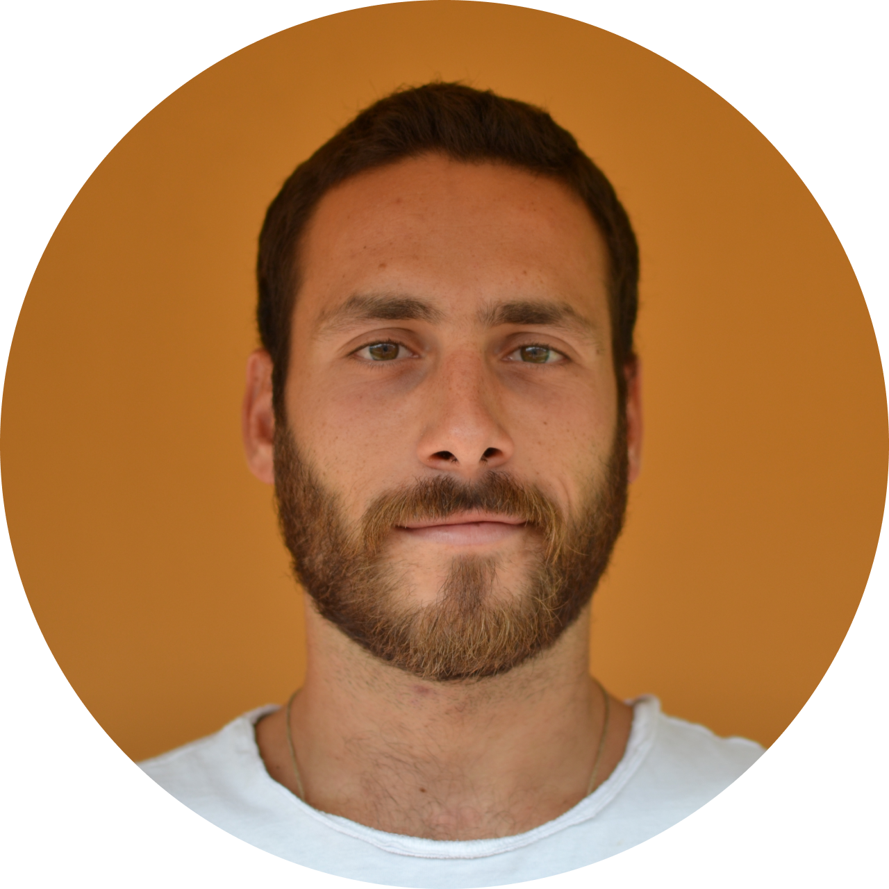

Lorenzo Lastrucci
UX/UI Designer con un passato in digital marketing e comunicazione.
Dal mio background porto con me un approccio strategico e di ricerca, che applico alle mie scelte di design mettendo l’ utente al centro e inquadrando il prodotto all’interno dell’ecosistema digitale.
Col mio lavoro voglio contribuire alla creazione di prodotti digitali che le persone amano usare.
Dal mio background porto con me un approccio strategico e di ricerca, che applico alle mie scelte di design mettendo l’ utente al centro e inquadrando il prodotto all’interno dell’ecosistema digitale.
Col mio lavoro voglio contribuire alla creazione di prodotti digitali che le persone amano usare.
Esperienze professionali
UX/UI Design
Competenze: UX Research, UX Design,
UI Design, Prototipazione, User Test.
UI Design, Prototipazione, User Test.
Sviluppo professionale
UX/UI Design
UX/UI Design
Master UX/UI Design, start2impact University (2022 - 2023).
Lavori svolti: Redesign del sito Jojob Real Time Carpooling, attraverso quattro progetti distinti che rappresentano le fasi del processo di design utilizzato - Discovery, Wireframing, User Interface e Prototyping, User Test.
Social media e digital marketing
Nt Food spa (2018 - 2022).
Gestione della comunicazione online per il brand Nutrifree su tutti i canali digitali attivati, coordinazione delle figure coinvolte nel processo - team interno e fornitori – con l’obiettivo di rendere l'esperienza utente coerente, fluida e puntuale.
Digital Marketing Assistant Internship
Agenzia di marketing "Marketing Professionals" - Sydney
(Aprile - Agosto, 2016)
(Aprile - Agosto, 2016)
Supporto al marketing director per la comunicazione e le attività digital dei clienti.
Formazione
UX e Scienza
Sherpa Community - Andrea Pinchi e Matteo Tibolla (Maggio 2023)
Tematiche: Neuromarketing, Bias, Behavioral Science, CRO, Usability Test.
Master UX/UI Design
start2impact University
(Giugno 2022 - 2023)
(Giugno 2022 - 2023)
Aree di studio: Graphic Design, UX/UI Design - Discovery e User Research, Wireframing, User Interface, Prototyping, User Test - HTML e CSS.
Marketing e ricerche di mercato
Università degli studi di Pisa
Laurea Specialistica (2013-2015)
Votazione finale 110/110 cum laude.
Laurea Specialistica (2013-2015)
Votazione finale 110/110 cum laude.
Economia aziendale
Università degli studi di Pisa
Laurea Triennale (2009-2013).
Laurea Triennale (2009-2013).
Conoscenze linguistiche
Inglese - conoscenza professionale.
Maturata grazie allo studio e due anni di vita in Australia.
Maturata grazie allo studio e due anni di vita in Australia.
Entriamo in contatto!


UX/UI/WEB DESIGNER